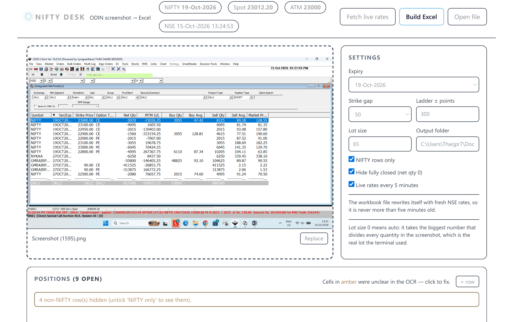
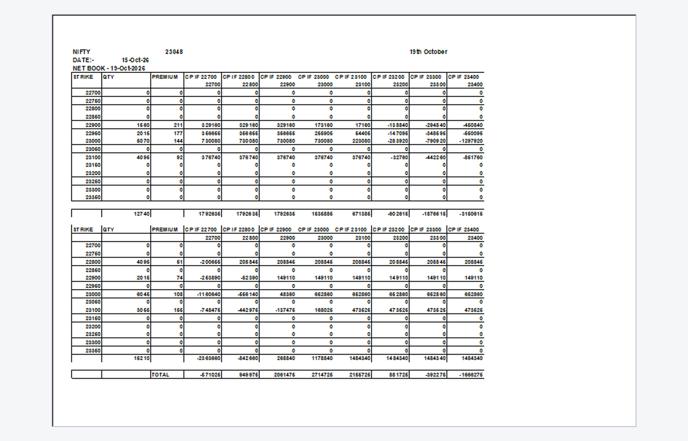

Nifty Desk reads a screenshot of your net-position grid with on-device Windows OCR, prices it against the public NSE option chain, and writes an Excel book laid out exactly like a hand-made one — so you can see what your book is worth before the market tells you.
Free & open source (MIT) · Windows · no broker login · no API key · your screenshots never leave your machine
Everyone is telling you how to trade. Nobody is telling you how safe you are.
Nifty Desk does not place orders and does not promise returns. It makes the risk visible. That is the whole point.
Four steps, and the only one that touches the internet is the public NSE quote request.

Drag & drop or Ctrl+V. Windows OCR reads the grid locally — the image never leaves your machine.
Non-NIFTY and fully-closed rows are filtered out; lot size is auto-detected from the quantities.
Spot and premiums come from the public NSE option chain. No API key. The book then refreshes itself every 5 minutes.
One Sheet1 block per expiry, each printing on its own page.
It deliberately outputs a spreadsheet rather than a pretty web chart, because the output is meant to be editable. The tool is not the source of truth — your book is.

STRIKE / QTY / PREMIUM ladder at a 50-point gap.TOTAL.CP IF <spot> scenario columns at a 100-point gap.The terminal shows a short as a negative net quantity. The sheet flips that and keeps a Side column, because this is what makes the payoff formulas come out right.
A short quantity is written as a positive number.
A long quantity is written as a negative number.
Windows 10 or 11, 64-bit. Nothing else is required.
NiftyDesk-win64-v1.0.1.zip from the latest release.NiftyDesk.exe. A console window opens and your browser follows a second later.Workbooks land in an output folder next to the exe; settings persist in config.json beside it. If the exe sits somewhere read-only, both move to %LOCALAPPDATA%\NiftyDesk.
build_exe.bat.pip install -r requirements.txt
python server.pyThen open http://127.0.0.1:8765/. Or double-click Run Nifty Desk.bat.
Three hard reasons, and none of them are laziness:
So: a local exe, and this page just explains it.
No. There is no broker login anywhere in it. Rates come from NSE's public option-chain endpoints, the same data any website visitor can see. Your positions only ever exist as a screenshot on your own disk.
It happens on real screenshots. The tool recovers the type from the sibling leg at the same strike, and where there is no sibling it compares that row's market price against the live NSE CE and PE at that strike and takes the closer one. That fixed a whole class of "my PE leg vanished" books.
Deliberate. You will want to type into the output — adjust a leg, add a strike you're thinking about. A locked, fully-generated report is prettier and less useful. The ladder is a worksheet, not a printout.
The symbol is configurable in config.json, but the layout and lot-size handling are tuned for NIFTY. Mac and Linux are not supported — the OCR step calls a Windows-only API.
No, and it never will. It reads a screenshot and writes a spreadsheet. That separation is on purpose.